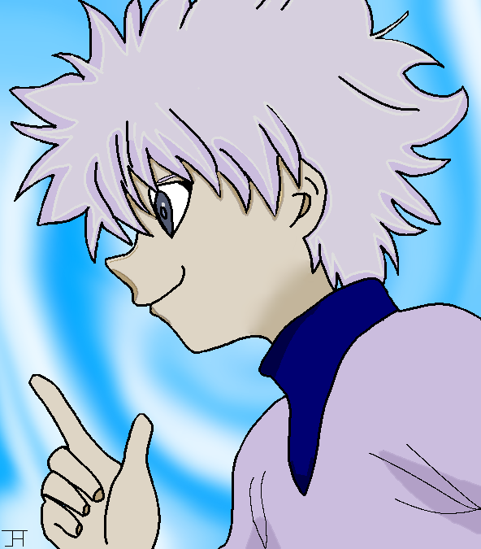
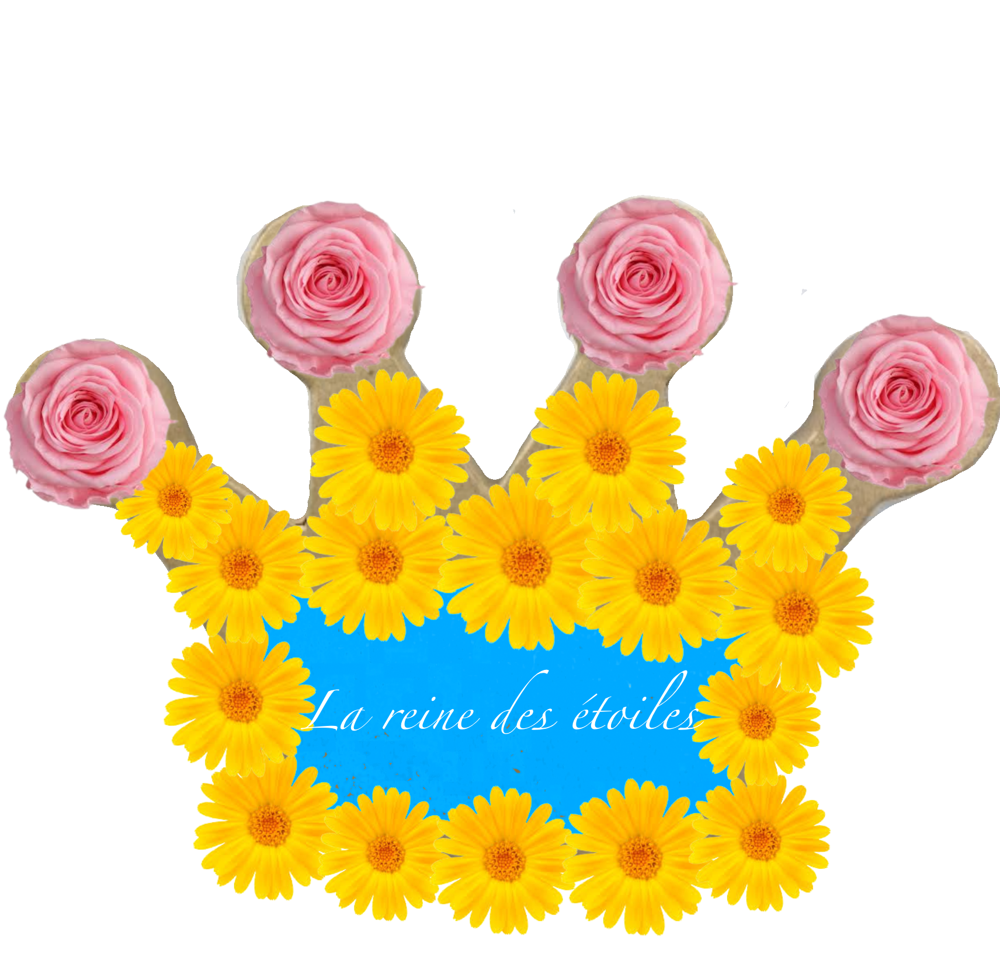
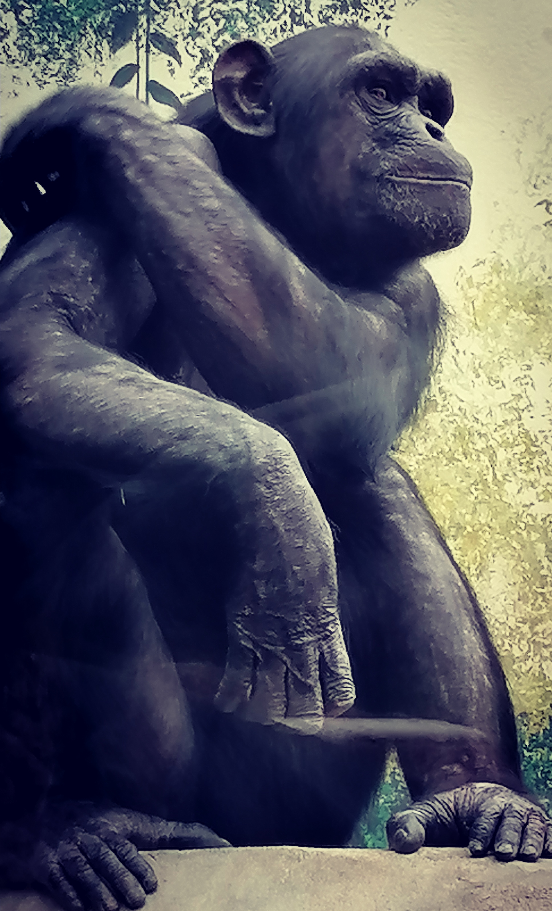

__________________________________________________________________________________
JENYFER
__________________________________________________________________________________
__________________________________________________________________________________
__________________________________________________________________________________
__________________________________________________________________________________


Voici les bannières que j'ai réalisé sur CANVA
Dessins digitaux sur Ipad Mini et ibis Paint
Sacrifice Vegeta réalisé en 17H -décembre 2022-
Kirua réalisé en 4h30 -décembre 2022-/h4> 
Quelques essais durant le confinement
Plume, coquillage et porte-clef en résine époxy, fleurs séchés et feuilles d'or
Premier essai de String Art
Diverses créations
maillot réalisé pour un concert d'Indochine -Juin 2022-
Essai typographique - Novembre 2022 -
Photo montage Gerbe de fleurs - Décembre 2019 -

Photos
Le penseur selon Beauval - Avril 2022 -

Notre Dame d'Amiens - Novembre 2022 -